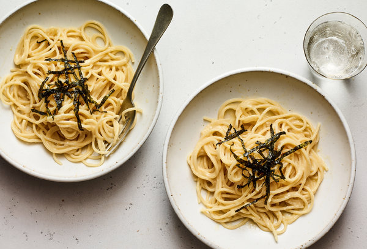

Miso Pasta

Miso Pasta
A nice creamy miso pasta that is bursting with umami.
You might not usually have miso pasta at the ready but this recipes gonna make you want to go and buy it everytime.
What you'll need:
Ingredients:
- 2 Tbsp of red miso paste
- Penne (I know the picture has linguine in it but penne is better for this one)
- 2 Tbsp of butter
- Mushrooms
- Heavy whipping cream
- Olive oil
Seasoning:
- 1 tsp of salt
- 2 tsp of pepper
Intsructions:
- Fill pot with enough water to cook the pasta for 10 minutes. Add salt into the water. Stir occasionally to make sure pasta cooks properly.
- Strain pasta. Pour the pasta water into a cup to use for later. We only need a little bit.
- Prep mushrooms and cut into thin slices.
- Mix miso paste and butter together. This doesn't need any salt as the miso paste has quite a bit of sodium in it.
- In a pan, heat up olive oil in medium heat then add mushrooms and cook for 1-2 minutes. Once those are done, remove mushrooms and set aside.
- In the same pan, add heavy whipping cream and pepper. Reduce heat to low.
- Once the whipping cream starts to slowly boil, add the miso mixture and stir until its all mixed
- Add the rest of the ingredients into the pan and stir until the pasta is covered in sauce
- Enjoy your pasta with a fine red wine
Return to main page